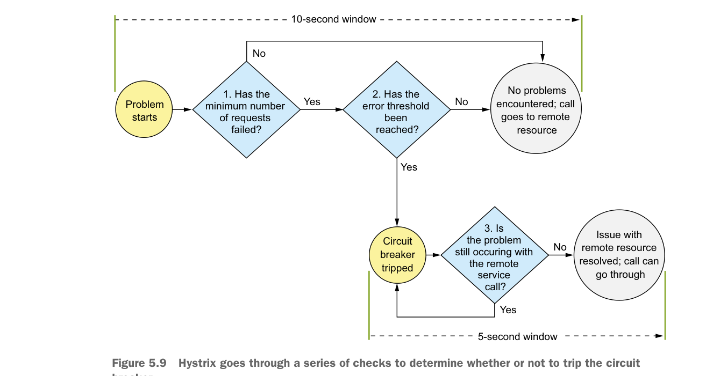

There are two reasons for this. First, if a remote resource is having performance problems, failing fast will prevent the calling application from having to wait for a call to time out. This significantly reduces the risk that the calling application or service will experience its own resource exhaustion problems and crashes. Second, failing fast and preventing calls from service clients will help a struggling service keep up with its load and not crash completely under the load. Failing fast gives the system experiencing performance degradation time to recover.
To understand how to configure the circuit breaker in Hystrix, you need to first understand the flow of how Hystrix determines when to trip the circuit breaker. Figure 5.9 shows the decision process used by Hystrix when a remote resource call fails.

Hystrix goes through a series of checks to determine whether or not to trip the circuit breaker.
Whenever a Hystrix command encounters an error with a service, it will begin a 10-second timer that will be used to examine how often the service call is failing. This 10-second window is configurable. The first thing Hystrix does is look at the number of calls that have happened within the 10-second window. If the number of calls is less than a minimum number of calls that need to occur within the window, then Hystrix will not take action even if several of the calls failed. For example, the default number of calls that need to occur before Hystrix will even consider action within the 10-second window is 20. If 15 of those calls fail within a 10-second period, not enough